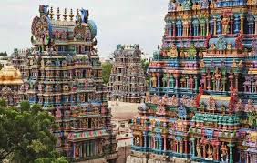
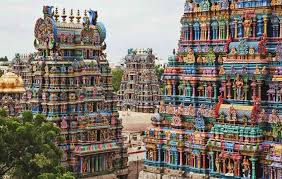

🗺️ Largest State — Rajasthan
Rajasthan is the largest Indian state by area. It includes the Thar Desert.

Curated facts grouped by Geography, Culture, Economy, Records and Defence. Use the search or filters to find facts quickly.
Rajasthan is the largest Indian state by area. It includes the Thar Desert.
Goa is the smallest Indian state by area, famous for its coastlines and heritage.
The Ganga (Ganges) is considered the longest and most sacred river system in India.
Kangchenjunga (8,586 m) on the India-Nepal border is India's highest peak.
The Thar Desert, mostly in Rajasthan, is India’s largest desert region.
Gujarat has one of the longest coastlines in India and hosts many ports.
Tamil is one of the world's oldest literary languages still in use today.
Bharatanatyam from Tamil Nadu is among the oldest classical dances in India.
Kumbh Mela is the world’s largest human gathering, held periodically at sacred rivers.
India is the world’s largest producer and exporter of many spices — cardamom, pepper, turmeric and more.
Yoga originated in ancient India over 5,000 years ago and is practiced globally.
The Indian Rupee (₹) is the official currency. India is among the top 5 global economies by nominal GDP.
India ranks among the world’s top 5 economies (by nominal GDP).
Indian Railways operates one of the world’s largest rail networks by size and ridership.
India is the world’s largest milk producer, thanks to cooperative dairy models like Amul.
Vande Bharat Express is India’s indigenously-built semi-high-speed train set.
Bogibeel Bridge (Assam) is one of India’s longest rail-cum-road bridges.
Located in Ahmedabad, it is the world’s largest cricket stadium by capacity.
Indira Gandhi International Airport (Delhi) handles the most passenger traffic in India.
India has one of the largest armed forces in the world in terms of active personnel and capabilities.
ISRO reached Mars on its first attempt (Mangalyaan) and set records for satellite launches.
Bharat Ratna is India’s highest civilian honour, awarded for exceptional service in any field.


 
